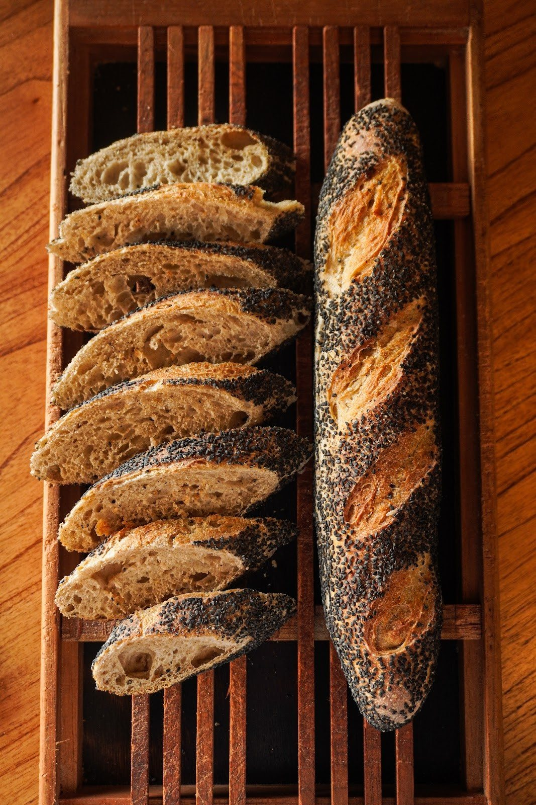
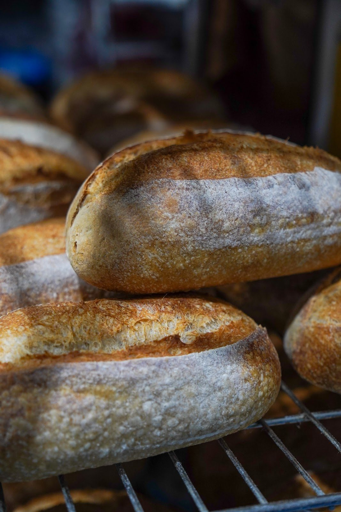

Início · O pão da casa
O pão da casa, sem pressa
Fermento natural, farinha, água e sal, e tempo. Assim a própria Da Talli descreve o pão que sai da Rua das Hortênsias.
Da descrição da casa
“Porque pão bom não tem atalho”
“Nossa produção é feita com ingredientes selecionados, sem pressa, porque pão bom não tem atalho.”Da Talli, na ficha do Google
A casa se apresenta como padaria artesanal de fermentação natural, especializada em pães de fermentação lenta, viennoiserie artesanal e cafés especiais.
Ingredientes
Farinha, água, levain e sal
Farinha
Farinha de trigo Irati e farinha integral Fazenda Vargem, nomeadas no cardápio.
Fermento natural
O levain, que dá o sabor e o miolo aberto do sourdough.
Água e sal
Só isso completa a receita do sourdough tradicional.
Tempo
Na pizza, são 72 horas de fermentação; no brioche, maturação a frio.

Do Instagram da casa
Feito à mão
“Na Da Talli, o feito à mão não é só uma forma de produzir. É parte do que faz cada receita ser o que ela é. Tem técnica, tempo, cuidado.”@datalli.padaria, 27/09/2026
“Amassou, modelou, recheou, finalizou. Repetiu o gesto quantas vezes fossem necessárias, sem pular ou acelerar etapas.”
Honestidade de rótulo
O que é natural e o que é lento
O cardápio da casa faz questão de separar: os pães rústicos e as focaccias são de fermentação natural; o brioche, o cinnamon roll e os mini brioches são de fermentação lenta, maturados a frio, mas não de fermentação natural.
Os brioches contêm leite e derivados, glúten, ovos e açúcar, como informa o cardápio.
Na vitrine
Os rústicos
- Sourdough tradicional600 gR$ 29,90
- Sourdough com crosta de 5 grãos600 gR$ 33,20
- Superlong tradicional1,2 kg · fora do deliveryR$ 55,00
- Baguete tradicional280 gR$ 14,90

Dúvidas frequentes
Perguntas comuns
O que é sourdough?
É o pão de fermentação natural, feito com levain no lugar do fermento comercial.
Todos os pães são de fermentação natural?
Os rústicos e as focaccias, sim. Os brioches são de fermentação lenta, como a casa informa.
Passe em casa
Tem fornada saindo na Rua das Hortênsias.
Segunda a sexta, das 8h às 19h; sábado e domingo, das 8h às 13h. Brunch no salão, retirada no balcão, encomendas e delivery próprio.